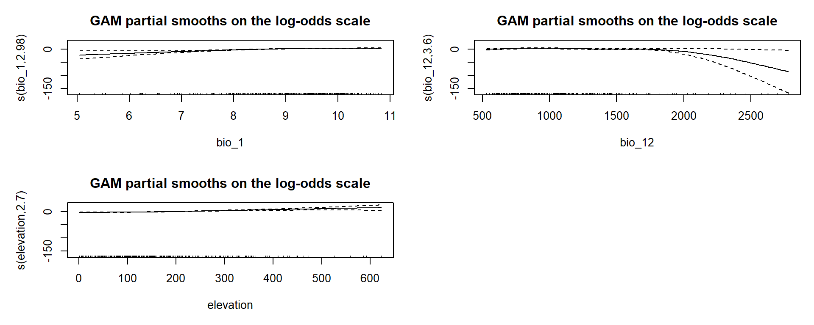
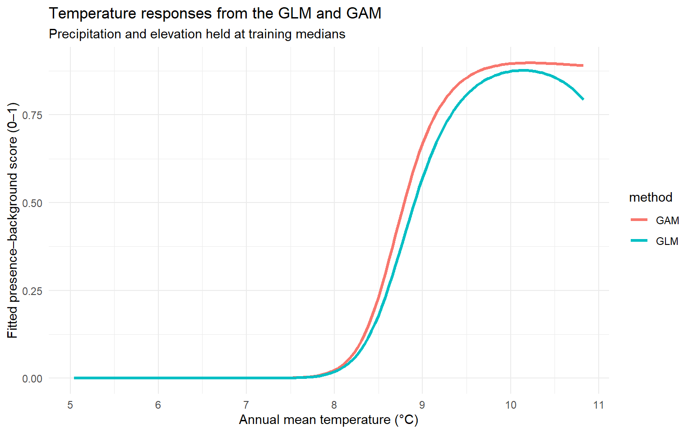
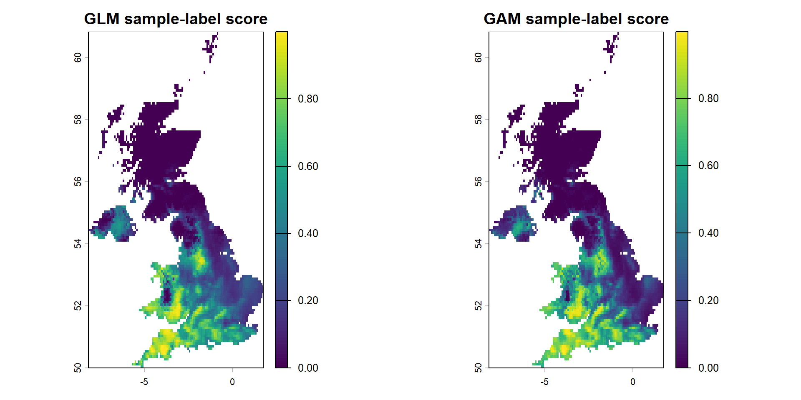

GAMs, tree-based models, MaxEnt, and environmental-envelope approaches
Why explore more than one SDM algorithm?
In Fitting your first species distribution model, we used a generalised linear model (GLM) to examine the relationships between lesser horseshoe bat (Rhinolophus hipposideros) records and environmental predictors. In Assessment and Projection, we introduced held-out model assessment and the limitations of presence–background predictions.
GLMs remain widely used in ecological research because their assumptions and coefficients can be examined and explained. However, a quadratic GLM is only one way to describe a curved ecological response. Other methods can represent more flexible shapes, thresholds and interactions. Comparing methods helps us understand how modelling assumptions affect results, rather than demonstrating that one algorithm is universally best.
TipLearning outcomes — optional research extension
This chapter extends the four-hour core practical. You can complete the earlier GLM exercises without fitting all the algorithms shown here.
By working through the examples, you should be able to:
Explain the main differences between GLMs, GAMs, Random Forests, Boosted Regression Trees (BRTs), MaxEnt and simple environmental envelopes.
Fit alternative models to the same training data and predictors.
Compare predictions on the same held-out test observations using ROC/AUC.
Examine how model structure changes environmental response curves and maps.
Explain why sampling bias, background selection and spatial validation matter even when an algorithm appears to predict well.
The GAM, Random Forest and simple envelope examples include executable R code. The more computationally demanding BRT and MaxEnt examples are also provided, but are not run automatically on this page. Copy them into your own RStudio script if you choose to investigate those methods.
Start with the same model data
Continue using your own annotated .R script in the RStudio project you created for this workshop. Do not create a new random split for every algorithm: the comparison only makes sense when all methods are trained and assessed on consistent data.
If you have just completed Chapter 6 or 7, keep sdm_df_train, sdm_df_test, proj_stack and glm_multi in the current R session. The setup below can also reconstruct the standard Chapter 5/6 teaching inputs if you open this page independently. If you changed the occurrence-cleaning or background-sampling strategy, rerun your own preceding code instead of using the standard recovery script.
library(terra)library(ggplot2)library(pROC)predictors <-c("bio_1", "bio_12", "elevation")# Reuse existing training and test data when continuing the tutorial.has_train <-exists("sdm_df_train", inherits =FALSE)has_test <-exists("sdm_df_test", inherits =FALSE)if (xor(has_train, has_test)) {stop("Only one of the training/test objects exists. ","Restore both from Chapter 6, or rerun your own earlier code.")}if (has_train &&!exists("proj_stack", inherits =FALSE)) {stop("The training/test data exist but proj_stack is missing. ","Restore the matching raster or rerun Chapter 6.")}# If needed, reproduce the standard teaching inputs from Chapter 5.if (!has_train) {if (!exists("sdm_df_clean", inherits =FALSE) ||!exists("proj_stack", inherits =FALSE)) {source("scripts/prepare_glm_inputs.R") }# Exactly the same stratified 70/30 split used in Chapter 6.set.seed(2026) clean_labels <-suppressWarnings(as.integer(as.character(sdm_df_clean$pa)) )stopifnot(!anyNA(clean_labels), all(clean_labels %in%0:1)) presence_rows <-which(clean_labels ==1L) background_rows <-which(clean_labels ==0L)stopifnot(length(presence_rows) >=5L,length(background_rows) >=5L) training_rows <-sort(c(sample(presence_rows, floor(0.7*length(presence_rows))),sample(background_rows, floor(0.7*length(background_rows))) )) sdm_df_train <- sdm_df_clean[training_rows, , drop =FALSE] sdm_df_test <- sdm_df_clean[-training_rows, , drop =FALSE]}# Make independent copies to avoid changing objects used in other pages.model_train <-as.data.frame(sdm_df_train[, c("pa", predictors)])model_test <-as.data.frame(sdm_df_test[, c("pa", predictors)])for (part inc("model_train", "model_test")) { d <-get(part) d$pa <-suppressWarnings(as.integer(as.character(d$pa)))stopifnot(!anyNA(d$pa), all(d$pa %in%0:1),all(stats::complete.cases(d)))assign(part, d)}stopifnot(all(c(0L, 1L) %in% model_train$pa),all(c(0L, 1L) %in% model_test$pa),inherits(proj_stack, "SpatRaster"),all(predictors %in%names(proj_stack)))# Retain Chapter 6's fitted model when available. Otherwise fit its# documented quadratic GLM formula, using TRAINING DATA ONLY.if (exists("glm_multi", inherits =FALSE) &&!has_train) {stop("A previous glm_multi is present without its matching training ","set. Rerun Chapter 6 or restart R before reconstructing inputs.")}if (!exists("glm_multi", inherits =FALSE)) { glm_multi <- stats::glm( pa ~poly(elevation, 2) +poly(bio_1, 2) +poly(bio_12, 2),data = model_train,family =binomial(link ="logit") )}stopifnot(inherits(glm_multi, "glm"))table(Training = model_train$pa)
Training
0 1
216 216
table(Test = model_test$pa)
Test
0 1
93 93
Important: The response is pa = 1 for recorded presences and pa = 0 for sampled background locations, not confirmed absences. Logistic regression, GAMs and machine-learning classifiers can assign 0–1 values to this contrast. Those numbers are not automatically probabilities of species occupancy.
NotePackages for the optional algorithms
This chapter uses terra, ggplot2 and pROC from the preceding practical. The additional algorithm packages are mgcv (GAM), randomForest (Random Forest), gbm (BRT) and maxnet (MaxEnt). Only install the packages needed for the examples you choose to run. Package installation is not performed automatically.
If an optional package is unavailable, its example reports that it was skipped. To run that example in your own RStudio project, install the package first.
1. Generalised Additive Models (GAMs)
A GAM extends a GLM by estimating a smooth relationship for each selected environmental predictor. Instead of specifying a straight line or a particular quadratic shape, we allow the data to inform the shape while applying a penalty that discourages unnecessary complexity. A GAM is still a regression model: it is not a guarantee of better predictions or of a biologically causal relationship.
We use the same three variables as the GLM: annual mean temperature (bio_1), annual precipitation (bio_12) and elevation. The k argument sets an upper limit on the complexity of each smooth; the fitted penalty controls how wiggly the relationship actually becomes. https://stat.ethz.ch/R-manual/R-devel/library/mgcv/html/gam.html
1.1 Fit and inspect the GAM
gam_model <-NULLif (requireNamespace("mgcv", quietly =TRUE)) {library(mgcv) gam_model <- mgcv::gam( pa ~s(bio_1, k =5) +s(bio_12, k =5) +s(elevation, k =5),data = model_train,family =binomial(link ="logit"),method ="REML" )summary(gam_model)} else {cat("GAM demonstration skipped: install package 'mgcv' to run it.\n")}
if (!is.null(gam_model)) {plot(gam_model, pages =1, shade =TRUE,main ="GAM partial smooths on the log-odds scale")}

Inspect: The smooth plots show each predictor’s partial contribution on the model’s link (log-odds) scale, not the probability of occurrence. What shapes are suggested? Would the same shapes be plausible outside the observed environmental range?
Change: Try k = 4 instead of k = 5, refit the model and examine how the curves change. A larger k does not automatically mean the model should become more complex; smoothing parameters and diagnostic checks also matter.
1.2 Compare a temperature response with the GLM
For a fair visual comparison, vary temperature across the range found in the training data, while holding precipitation and elevation at their training medians.
temp_gradient <-data.frame(bio_1 =seq(min(model_train$bio_1),max(model_train$bio_1), length.out =150),bio_12 =median(model_train$bio_12),elevation =median(model_train$elevation))temp_gradient$GLM <-as.numeric(stats::predict( glm_multi, newdata = temp_gradient, type ="response"))if (!is.null(gam_model)) { temp_gradient$GAM <-as.numeric(stats::predict( gam_model, newdata = temp_gradient, type ="response")) response_curves <-rbind(data.frame(bio_1 = temp_gradient$bio_1,method ="GLM", score = temp_gradient$GLM),data.frame(bio_1 = temp_gradient$bio_1,method ="GAM", score = temp_gradient$GAM) )ggplot(response_curves,aes(x = bio_1, y = score, colour = method)) +geom_line(linewidth =1.1) +labs(x ="Annual mean temperature (°C)",y ="Fitted presence–background score (0–1)",title ="Temperature responses from the GLM and GAM",subtitle ="Precipitation and elevation held at training medians") +theme_minimal()} else {plot(temp_gradient$bio_1, temp_gradient$GLM, type ="l",xlab ="Annual mean temperature (°C)",ylab ="Fitted presence–background score (0–1)",main ="GLM response; GAM not installed")}

Explain: If the GAM follows a different curve, this reflects the modelling assumptions and the sample. It does not demonstrate which response is ecologically correct.
2. Tree-based machine-learning methods
Tree-based models separate environmental space using rules such as “temperature above a threshold”. Their outputs may represent complex non-linear responses and interactions without writing those terms explicitly in a regression formula. This flexibility can be useful, but does not remove the need to design the study area, select ecologically relevant predictors or check sampling bias.
2.1 Random Forest
A Random Forest builds many trees using bootstrap samples and randomly selected predictors. Averaging across trees can stabilise predictions relative to a single classification tree. Its class-vote proportions, however, still describe the labels in our presence–background training sample; they do not automatically estimate true occupancy probabilities.
Call:
randomForest(x = model_train[, predictors, drop = FALSE], y = factor(model_train$pa, levels = c(0, 1)), ntree = 250, importance = TRUE)
Type of random forest: classification
Number of trees: 250
No. of variables tried at each split: 1
OOB estimate of error rate: 24.31%
Confusion matrix:
0 1 class.error
0 149 67 0.3101852
1 38 178 0.1759259
0 1 MeanDecreaseAccuracy MeanDecreaseGini
bio_1 7.522191 45.06572 40.18041 77.12785
bio_12 5.054430 35.90906 34.39154 73.82232
elevation -2.994255 36.15070 30.27504 60.05932
Inspect: Variable importance indicates which variables help the fitted forest separate the sample labels. It is not a measure of causal ecological importance, particularly when predictors are correlated.
2.2 Boosted Regression Trees (BRTs)
Boosted Regression Trees build trees sequentially: each new tree aims to improve what the preceding trees have not explained. The learning rate, interaction depth and number of trees affect model complexity. Tuning and cross-validation must use training data only.
The optional example uses the gbm package directly, avoiding a dependency on the older dismo::gbm.step() workflow. Cross-validation is carried out within the training subset, and the reserved test data are used only afterwards. Training may take longer on some computers.
library(gbm)set.seed(2026)brt_model <- gbm::gbm( pa ~ bio_1 + bio_12 + elevation,data = model_train,distribution ="bernoulli",n.trees =400,interaction.depth =2,shrinkage =0.02,n.minobsinnode =5,bag.fraction =0.6,train.fraction =1,cv.folds =5,n.cores =1,verbose =FALSE)# Choose the number of trees using training-set CV, not the test set.best_trees <- gbm::gbm.perf( brt_model, method ="cv", plot.it =FALSE)brt_score_test <-as.numeric(predict( brt_model, newdata = model_test,n.trees = best_trees, type ="response"))# Inspect predictor influence (model-specific, not causal).summary(brt_model, n.trees = best_trees)
Research question: If the BRT seems substantially more accurate than the GLM, could it be exploiting environmental thresholds, interactions or spatial sampling patterns? How would spatially separated validation help distinguish these explanations?
3. MaxEnt — presence–background modelling
MaxEnt is especially common in presence-only SDM studies. It contrasts environments at recorded presence locations with a sample of available environments (background) within a defined study region. The choice of accessible area, background design, predictor features and regularisation can materially change its predictions.
The maxnet package fits a MaxEnt-style model in R without the Java-based application. Here we use the same background labels and training/test partition as the other methods, rather than switching to a different set of target-group points halfway through the comparison. This is a consistent teaching comparison; a dedicated MaxEnt research analysis may warrant a different, explicitly justified background design.
library(maxnet)maxnet_variables <- model_train[, predictors, drop =FALSE]maxnet_formula <- maxnet::maxnet.formula( model_train$pa, maxnet_variables,classes ="lq"# linear and quadratic features for this demonstration)maxnet_model <- maxnet::maxnet(p = model_train$pa,data = maxnet_variables,f = maxnet_formula,regmult =1.5)maxnet_score_test <-as.numeric(predict( maxnet_model,newdata = model_test[, predictors, drop =FALSE],type ="cloglog"))plot(maxnet_model, type ="cloglog")
Interpretation: MaxEnt’s cloglog output is often displayed on a 0–1 scale, but it should not be read as a verified probability of occupancy without assessing the assumptions linking the presence–background sampling process to occurrence. The output also differs in definition from an RF class-vote proportion or a GLM’s sample-label probability; a shared scale does not make the numerical values directly interchangeable.
4. An environmental-envelope baseline
An environmental-envelope model provides a very simple reference against which more flexible algorithms can be compared. Here we calculate the minimum and maximum values of each predictor at the training presences, and ask whether a location falls within all three intervals.
This is a deliberately simple rectangular range envelope, inspired by early climatic-envelope approaches. It is not the percentile-based dismo::bioclim() algorithm, and its binary output does not represent a calibrated suitability probability.
Inspect: Why might most background sites also fall within the environmental ranges found at presences? Why is a rectangular envelope sensitive to outliers and to the number of training records?
NoteOptional: map the environmental envelope
This raster has two possible classes: inside or outside the observed training-presence ranges. It does not identify confirmed species presence or absence.
A fair comparison requires the same training and test partition, consistent predictor definitions and a clearly stated background-selection strategy. Here we calculate AUC on the held-out test data, treating zeros as sampled background locations, not confirmed absences. AUC describes how frequently a sampled presence receives a higher score than a sampled background point (allowing for ties).
AUC is useful for comparing ranking ability under the same evaluation design. It does not tell us whether the numerical scores are calibrated probabilities, whether a model is biologically correct or whether it will transfer successfully to another landscape. If test results repeatedly guide feature selection or tuning, the test set ceases to provide an independent assessment.
5.1 Calculate AUC for the same observations
# Fix the direction: class 1 (presence) is expected to score higher.heldout_auc <-function(scores) {stopifnot(length(scores) ==nrow(model_test),all(is.finite(scores))) r <- pROC::roc(response = model_test$pa,predictor =as.numeric(scores),levels =c(0, 1), direction ="<", quiet =TRUE )as.numeric(pROC::auc(r))}glm_score_test <-as.numeric(predict( glm_multi, newdata = model_test, type ="response"))model_scores <-list(GLM = glm_score_test,`Range envelope`= envelope_score_test)if (!is.null(gam_model)) { model_scores$GAM <-as.numeric(predict( gam_model, newdata = model_test, type ="response"))}if (!is.null(rf_model)) { model_scores$`Random Forest`<-as.numeric(predict( rf_model, newdata = model_test[, predictors, drop =FALSE],type ="prob")[, "1"])}# When running the optional BRT and MaxEnt chunks in the SAME# RStudio session, their test predictions can be added as well.if (exists("brt_score_test", inherits =FALSE)) { model_scores$BRT <- brt_score_test}if (exists("maxnet_score_test", inherits =FALSE)) { model_scores$MaxEnt <- maxnet_score_test}auc_results <-data.frame(Model =names(model_scores),`Test AUC`=round(vapply(model_scores, heldout_auc,numeric(1)), 3),check.names =FALSE)knitr::kable(auc_results,caption ="AUC evaluated on the same held-out samples")
AUC evaluated on the same held-out samples
Model
Test AUC
GLM
GLM
0.883
Range envelope
Range envelope
0.699
GAM
GAM
0.864
Random Forest
Random Forest
0.853
Inspect: Do methods with more flexible responses always outperform the GLM? If two models achieve similar AUC, might their maps or ecological interpretations nevertheless differ? Remember that this is still a random-split demonstration, not independent validation across distant geographic regions.
5.2 Compare spatial predictions
The same environmental raster, proj_stack, can be passed to several trained methods. Each map is an output from a different statistical definition of suitability; comparing their spatial pattern is more informative than treating the raw numbers as perfectly equivalent.
glm_compare_map <- terra::predict( proj_stack[[predictors]], glm_multi,type ="response", na.rm =TRUE)# A GAM map is produced only when mgcv is available.if (!is.null(gam_model)) { gam_compare_map <- terra::predict( proj_stack[[predictors]], gam_model,type ="response", na.rm =TRUE ) old_par <- graphics::par(mfrow =c(1, 2))plot(glm_compare_map, main ="GLM sample-label score",zlim =c(0, 1))plot(gam_compare_map, main ="GAM sample-label score",zlim =c(0, 1)) graphics::par(old_par)} else {plot(glm_compare_map, main ="GLM sample-label score",zlim =c(0, 1))}

NoteOptional: project Random Forest and MaxEnt maps
These use the same predictor raster. A custom prediction function is needed for Random Forest to select the vote proportion for class "1". For MaxEnt, type = "cloglog" returns a different model-output definition from the GLM and GAM response scores.
# Run only after fitting the corresponding model(s).if (!is.null(rf_model)) { rf_map <- terra::predict( proj_stack[[predictors]], rf_model,fun =function(model, data, ...) {as.numeric(predict(model, newdata = data,type ="prob")[, "1"]) },na.rm =TRUE )plot(rf_map, main ="Random Forest: proportion of class-1 votes")}if (exists("maxnet_model", inherits =FALSE)) { maxnet_map <- terra::predict( proj_stack[[predictors]], maxnet_model,fun =function(model, data, ...) {as.numeric(predict(model, newdata = data,type ="cloglog")) },na.rm =TRUE )plot(maxnet_map, main ="MaxEnt: cloglog score")}
5.3 What else should be reported?
A single AUC value leaves much unexplained. For an independent ecological analysis, also consider the accessible area, species records and provenance, background-selection sensitivity, variable choice, tuning procedure, spatially separated validation, uncertainty, predictor correlations, temporal matching and novel conditions in a future projection. The Assessment and Projection chapter introduces threshold-based measures and future-climate checks.
WarningInterpretation of the comparison
The model fitted to these data contrasts sampled presence records with sampled background sites. A flexible algorithm may detect real ecological gradients or patterns introduced by observers, sampling effort, spatial clustering or the selected background design. Neither a high AUC nor agreement between algorithms demonstrates that the model predicts true occurrence probabilities or future range shifts.
The holdout split is random for teaching purposes. For research or conservation decisions, compare plausible sampling designs and use spatially appropriate validation, ideally supported by independent survey data.
6. Further research approaches
The preceding examples are correlative single-species models. Other research frameworks address questions that the algorithms above do not automatically solve:
Spatial GAMs and mixed models: Include structured spatial terms or random effects to investigate residual spatial dependence. This requires suitable coordinates, units and a careful distinction between explaining spatial pattern and generalising to new places; simply including latitude and longitude does not remove sampling bias.
Bayesian and INLA-based SDMs: Represent uncertainty and, where appropriate, spatial random fields or hierarchical data structures. See R-INLA.
Joint species distribution models: Model multiple species together, describing shared responses and residual associations. Residual associations do not, by themselves, establish competition, facilitation or other biotic interactions.
Dynamic occupancy and spatio-temporal models: Address changing occupancy and imperfect detection when appropriate repeated survey data are available (for example, via unmarked).
Mechanistic and hybrid SDMs: Include species physiology, behaviour, demography or dispersal processes when relevant data and assumptions are available.
Neural networks and deep learning: May help with large and complex datasets, particularly imagery, but are not automatically preferable to well-designed and validated regression models.
NoteResearch extension: future-climate transfer
The verified data/Clim_cmip6_2041_2060_UK.tif represents the BCC-CSM2-MR climate model under SSP1-2.6 for 2041–2060. Use it only with predictors that match the fitted model in their definitions, units and spatial grid. Elevation is retained as the present-day topographic predictor in this teaching example.
future_climate <- terra::rast("data/Clim_cmip6_2041_2060_UK.tif")stopifnot(terra::compareGeom( future_climate[["bio_1"]], proj_stack[["bio_1"]]))future_predictors <-c( future_climate[[c("bio_1", "bio_12")]], proj_stack[["elevation"]])names(future_predictors) <- predictors# Compare the same fitted model under current and future climate.if (!is.null(gam_model)) { gam_future_map <- terra::predict( future_predictors, gam_model,type ="response", na.rm =TRUE )plot(gam_future_map - gam_compare_map,main ="Change in GAM score: SSP1-2.6, 2041–2060")}
Explain: This is a conditional change in the model’s relative score, not a confirmed prediction of bat colonisation, extinction or range size. A single GCM and SSP cannot represent the full range of plausible futures; sampling bias, extrapolation into novel climates and limited transferability must be discussed.
7. Practise, interpret and explain
NoteExtend your own analysis
GLM versus GAM: Compare their temperature-response plots. Describe one difference in model flexibility and one reason why extra flexibility might not improve ecological interpretation.
Random Forest: Fit the forest using the same training subset and calculate AUC using the same test data. Does it identify the same important predictors as the GLM or GAM? How might predictor correlation affect importance rankings?
BRT or MaxEnt: Run one optional algorithm in RStudio. Record its settings, training data and background scheme in your .R script, then add its test scores to the comparison table.
Environmental envelope: Explain why a minimum–maximum rule is not equivalent to the full Bioclim algorithm or to a probability of occupancy.
Evaluate the comparison: Describe why a high random-split AUC is insufficient evidence that a model will predict the species’ distribution in a new region or climate.
Add short comments to your own script explaining your model choices and the limitations of the outputs.
Next: Explore Ensemble Models to consider when and how predictions from several algorithms might be combined, and what additional assumptions an ensemble introduces.